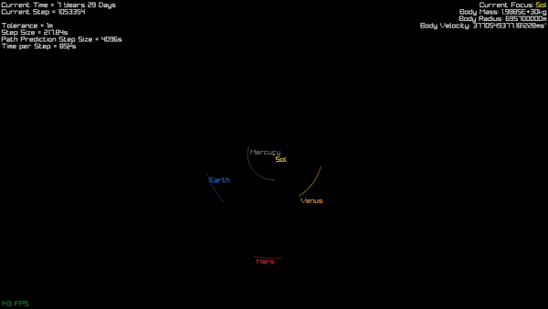

About me
Toki!
I'm Penny, a full-time software developer with a background in astrophysics. I made this website so I can show off some of the cool stuff I've done.
I'm currently working in the UK as a software engineerI do most of my professional work in the field of metrology, being involved with various aerospace, automotive, and pretty much whatever you can think of that needs precision manufacturing.
I also work on my own projects in my free time. I'm still carrying on from my computational physics background making sims of various sorts. Because I'm full of myself, I like to think that I'm a bit of a game designer and have worked on a few different game concepts since I learned how to write code. I hope one day to be able to unite my two loves and make a fully physics simulate game which is actually fun to play. As hard as that may be (and Outer Wilds beat me to it anyway).
I also previously graduated with a First Class Master's Degree in physics with astrophysics from Northumbria University. This is where I found my love of computational physics (I still dont know why everyone else in the class, bar one, hated). My masters and bachelors disserations can be viewed at the right hand side.
Here's an N-Body sim using RKF45 that I wrote with Raylib for graphics

"No. This is somewhere to be. This is all you have, but it's still
something. Streets and sodium lights. The sky, the world. You're
still alive."
Volition, Disco Elysium
Volition, Disco Elysium